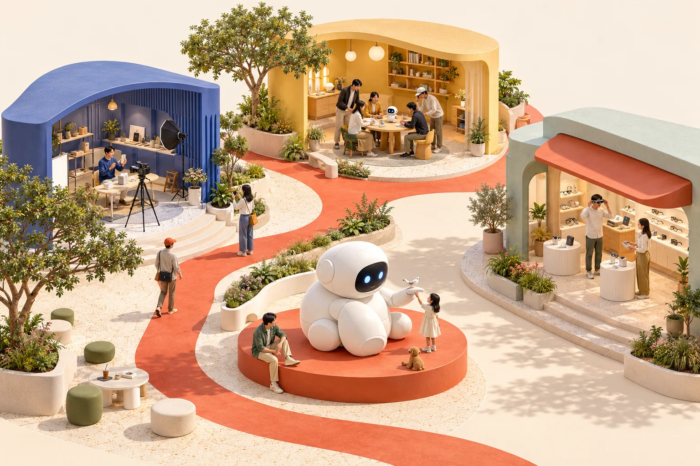
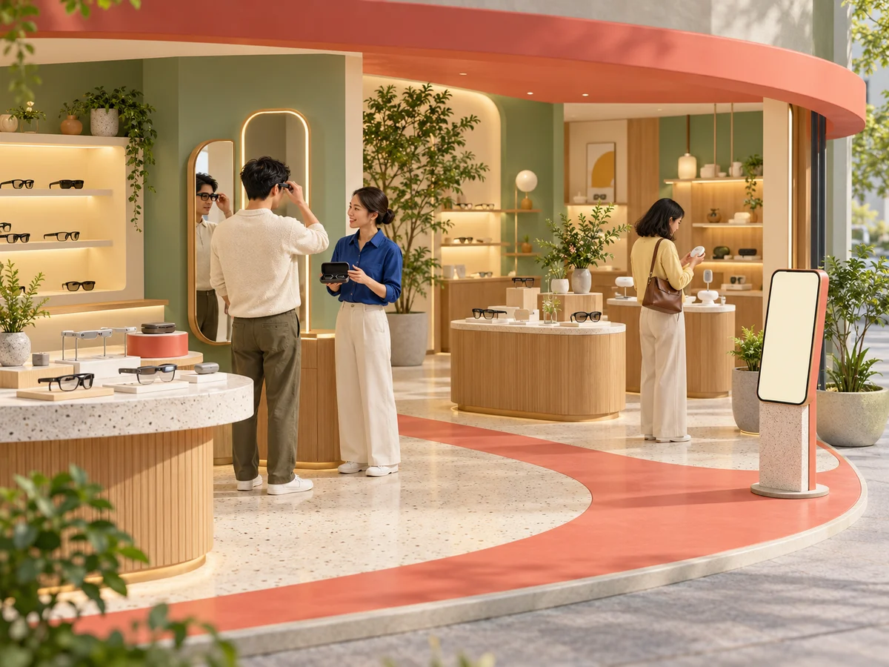

把产品，带到买家面前。
找到值得先试的销售路径，准备合作材料、样机与体验安排，直接承接自己的买家。
带一款产品来聊聊 ↗联野 · AI 时代的新品起销网络
走出 Demo，
走到会买的人面前。

01 / 新品去哪里卖
有人愿意讲，有地方可以试，
有一群人，恰好需要它。

原创场景示意AI 新零售 / 专业门店
品牌准备样机与已确认的产品事实，让店员知道怎样介绍。
可演示范围 / 操作说明 / 售后安排
品牌 → 门店路径为预设示意。原则上由品牌承接成交与履约；具体零售、导流或分佣方式，在合作前另行约定。
可以探索的市场通路
这一组合暂未找到参考入口。试试其他方向，或清除关键词。
公开市场通路参考，不代表联野已合作或已获准入。社群与会员入口不等于可调用的私域销量；具体合作需逐项确认。查看资料来源 ↗
02—03 / 一款产品，一次具体合作
然后，把理由放进一次体验。
再让真实结果，决定下一步。
以「旅行记录眼镜」为演示假设：想记录沿途，又不想频繁举手机。无真实品牌，功能、画质及交付条件均待确认。
 同一款新品，走过同一次合作
同一款新品，走过同一次合作事实与服务条件
先确认清楚。
01 / 带上新品
从一个具体的买家问题开始，再确认产品能否解决。
需求、服务与投入条件成立后，再讨论扩大。
页面由预设资料驱动，演示工作方式。AI 辅助资料整理与材料准备；实际合作由人推进。当前处于首次合作验证阶段。
04 / 一起把新生意做起来
找到值得先试的销售路径，准备合作材料、样机与体验安排，直接承接自己的买家。
带一款产品来聊聊 ↗找到适合自己经营方式的新品，拿到清晰的演示与品牌支持，按实际服务和约定贡献获得收益。
聊聊你的受众或空间 ↗按项目范围，形成优先销售路径与候选入口建议、合作准备材料与推进记录、首轮体验或试销安排，以及结果复盘和下一步建议。Demo 阶段先体验与需求反馈；具备合规与交付条件后，再约定首销。
按实际服务范围约定服务费；涉及成交或增量价值时，先明确归因、退款处理、费用上限和结算周期。当前没有经过验证的统一价格、销量或收益承诺。
联野处于首批合作验证阶段。AI 用于辅助资料整理、场景比较与材料准备，人确认事实并推动合作。页面演示由预设资料驱动；真实付费、销售表现、AI 效率增量、网络复用和增长效果仍需实际项目验证。
从一款产品，一个场景开始
第一次沟通，带上这几件事就好：